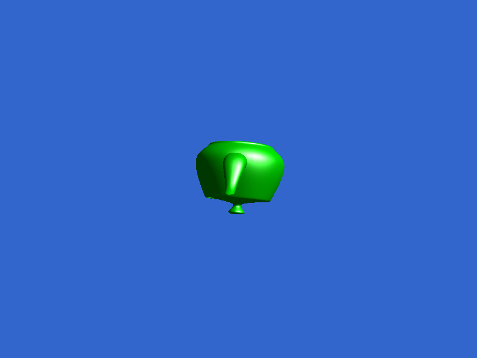
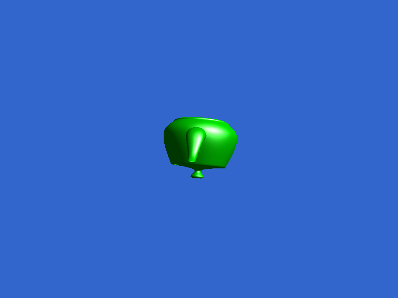

This assignment just goes over some of the basics of using OpenGL with SDL. We can see some basic shaders, models, and window features of the framwork in the provided code. For the homework, I compiled the provided examples and experimented with some small changes to observe their effects:


 

By removing this call, we disable the test that prevents the drawing of triangles which are obscured by another. This means that

I just modified the line that checks the keyup event to exit on SDLK_ESCAPE to also check SDLK_Q
(windowEvent.type == SDL_EVENT_KEY_UP && (windowEvent.key.key == SDLK_ESCAPE || windowEvent.key.key == SDLK_Q) )
I changed the line in the fragment shader from "const vec3 lightDir = vec3(0,1,1);" to "const vec3 lightDir = vec3(0,0,-1);"

Here’s the render of the triangle I made, it rotates still :p but it’s there.